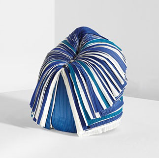
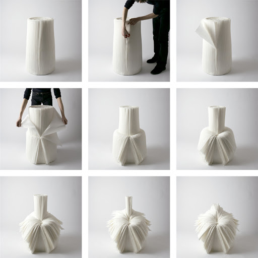

Designer et architecte japonais, diplômé d'un Master en architecture de la Waseda University de Tokyo en 2002, il a fondé le studio Nendo la même année. C'est lui qui est à l'origine du projet de la Cabbage Chair en collaboration avec le célèbre créateur Issey Miyake. Sa motivation dans le travail à toujours été de mettre en exergue les émotions sensibles, les idées les plus simples faisant pour lui un des meilleurs points de départ.
The Cabbage Chair
- By Nendo -
DécouvrirLes créateurs de ce projet

Célèbre styliste japonais, il a étudié le design à la Tama Art University de Tokyo. Connu pour son usage du "papier plissé" dans ses créations vestimentaires, il a obtenu au fil des années une notoriété sans précédent. Reconnu comme un styliste ayant un attrait pour le minimalisme, il a tenté selon ses propres mots de faire une mode qui soit "ni japonaise, ni occidentale". En collaboration avec le studio Nendo, il a fourni les rouleaux de papier plissé inutilisés de ses usines pour cette création.
The Cabbage Chair

Issey Miyake a demandé de fabriquer des meubles à partir du papier plissé qui est produit en quantités massives pendant le processus de fabrication de tissu plissé, et généralement abandonné comme un sous-produit indésirable. La solution à son défi a transformé un rouleau de papier plissé en une petite chaise qui apparaît naturellement quand vous pelez ses couches extérieures, une couche à la fois. Le but était de répondre aux enjeux environnementaux et économiques avec ce projet.
La Production
La Cabbage chair est formée à partir du papier plissé issue des usines d'Issey Miyake. Les résines ajoutées pendant le processus de production du papier original ajoute de la force et la capacité de mémoriser des formes à la chaise. Les plis eux-mêmes donnent à la chaise élasticité pour un effet global qui semble presque rugueux, mais donne à l’utilisateur une expérience de sièges confortables. Ici vous ne verrez ni clou ni vis dans le processus de production car il n'y en a pas. Le papier plissé est simplement mit en rouleau de sorte à ce que l'utilisateur n'ait plus qu'à le couper couche par couche pour créer la chaise. Ici l'utilisateur devient acteur en "créant" lui-même sa chaise.
Son utilisation

Comme mentionné plus haut, l'utilisateur est l'acteur de la "création" de la chaise. Ici, si vous ne faites rien alors vous n'aurez qu'un simple rouleau de papier plissé qui restera
impossible à utiliser. Si elle s'appelle la Cabbage Chair (ou la Chaise Choux en français), c'est car son utilisation à le même principe qu'effeuiller un choux.
En effet, l'utilisateur va couper les couches de la chaise une à une comme vous pouvez le voir sur l'illustration afin de créer la chaise finale. Il s'agit en effet d'une tâche
demandant un peu de patience, mais la récompense de pouvoir enfin s'asseoir sur cette chaise n'en est alors que plus importante.